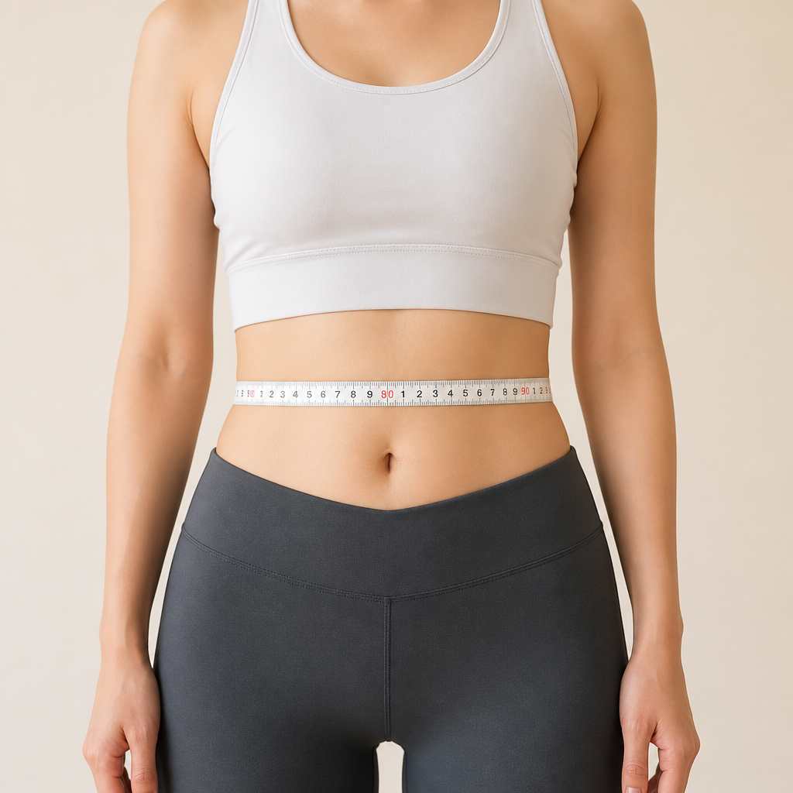
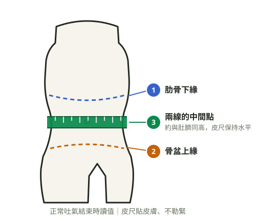

第②章 我需要管理體重嗎？（BMI／腰圍自我評估）
本章想讓讀者帶走的三句話
- 兩個數字就能初步評估：BMI 看整體，腰圍 看內臟脂肪。
- BMI 正常不代表過關——腰圍超標的「泡芙人」風險一樣高。
- 對照結果分三種顏色：綠燈維持、黃燈開始調整、紅燈建議就醫評估。
2-1 動手算 BMI
BMI＝體重（公斤）÷ 身高（公尺）÷ 身高（公尺）。
例：70 公斤、1.65 公尺 → 70 ÷ 1.65 ÷ 1.65 ≈ 25.7。
台灣成人標準（衛福部國健署）：
| BMI | 分級 |
|---|---|
| 低於 18.5 | 體重過輕 |
| 18.5–24 | 健康體位 |
| 24–27 | 過重 |
| 27–30 | 輕度肥胖 |
| 30–35 | 中度肥胖 |
| 35 以上 | 重度肥胖 |
出處：國健署成人健康體位標準
2-2 量腰圍：比體重計更誠實的一條線
腰圍量的是內臟脂肪——包在肝臟、腸子外面的脂肪，正是它在影響血糖血壓。量法三步驟：
- 除去腰部覆蓋衣物，輕鬆站立，雙手自然下垂
- 皮尺繞過肋骨下緣與骨盆上緣的中間點（大約與肚臍同高），保持水平
- 正常吐氣結束時讀數字，皮尺貼皮膚但不勒緊
標準：男性未滿 90 公分、女性未滿 80 公分。超過就代表內臟脂肪過多。


出處：國健署腰圍量測標準（男 90／女 80 cm）
2-3 BMI 正常就沒事？小心「泡芙人」
有一種人 BMI 標準、四肢不粗，但肚子軟軟凸凸、體脂肪偏高——俗稱泡芙人。因為肌肉少、內臟脂肪多，血糖血脂的風險不輸過重的人。所以BMI 和腰圍要一起看：BMI 正常但腰圍超標，一樣要往下讀第④⑤章，把飲食和肌力練回來。
出處：醫師臨床衛教經驗
2-4 對照你的結果：綠燈、黃燈、紅燈
把兩個數字放進來，看你是哪一燈——
| 燈號 | 條件 | 建議 |
|---|---|---|
| 🟢 綠燈 | BMI 18.5–24 且 腰圍未超標 | 維持現在的生活型態，每年量一次 |
| 🟡 黃燈 | BMI 24–27 或 腰圍超標 | 從第④章（吃）、第⑤章（動）開始調整，3 個月後再量 |
| 🔴 紅燈 | BMI 27 以上；或 BMI 24 以上加上高血壓／血糖異常／脂肪肝等任一項 | 建議到減重門診做完整評估（見第⑦章）——這不是最後手段，是最有效率的起點 |
出處：肥胖治療適應症通則（國健署／台灣肥胖醫學會方向）
2-5 自我紀錄的起點
今天的數字就是你的起點。找一張紙或手機備忘錄，記下：日期、體重、腰圍。目標不是數字漂亮，是下個月的你比這個月健康。
出處：行為改變自我監測通則
懶得自己算？用 30 秒自評工具，輸入三個數字直接看你的燈號（純本機計算，不上傳資料）。